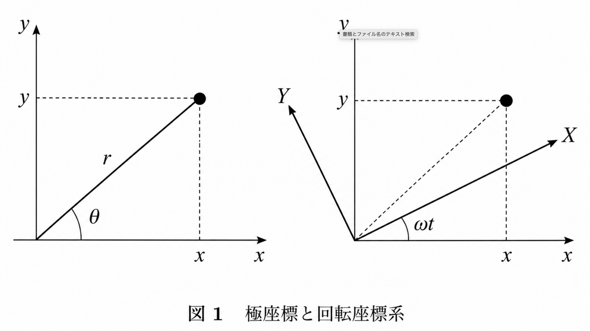

せっかくなので、前のものを書いた人とは別人だが、私は異なるアプローチで コリオリ力や遠心力について考えよう。それは、変分原理を利用する方法である。
数式

図１のように座標を置く。
\(t\)を時間、\(U\)をポテンシャルエネルギー、\(m\)を物体の質量、 \(x'=\frac{dx}{dt}\)、\(x''=\frac{d^2x}{dt^2}\)とする。
すると、
となる。ここで、
とする。
これで \(x,y\) を変換して、
と書き直す。
ここで、オイラー・ラグランジュ方程式というものを解くと、
となる。\(2m\omega Y'\)と\(-2m\omega X'\)はコリオリ力、 \(m\omega^2Y\)と\(m\omega^2X\)は遠心力である。
解説
ただ数式を見ただけではおそらくよくわからず混乱しているだろう。 物理は数式の意味を理解することが重要だ。よって、数式の意味を追っていく。
１．変分原理とは
変分原理はざっくり言えば停留する関数や数値を求める方法である。 例えるならば、微分して傾き０になる \(x\) を求めるようなものである。 しかし、変分法を使うと関数に対しても停留するものを導くことができる。 例えば、\(q(t)\)を未知の関数として、\(S[q]\)という関数 （汎関数と呼ばれ、作用ともいう）があるとすると、 \(S[q]\)が停留するような \(q\) を変分法により求めることができる。
ここで使用するのが、オイラー・ラグランジュ方程式である。 \(S[q]\)を
としたときに、オイラー・ラグランジュ方程式は、
となる。詳細な証明は省くが、これを満たすことと \(S[q]\)が停留することは同値である。
ここでおそらく、なんでこんなものが必要なのだと疑問に思ったことだろう。 化学っぽく言うなれば、現象は安定した方向に向かう。 この「安定した状態」を数学的に考えるとき、ある量が変化しないという 停留の概念は都合がいいのである（ただし、停留する点は必ずしも極小とは限らない）。 そして、これらのことは物体の運動にも言えることで、変分法では数式的には 運動は無数にあるが、作用が停留するような運動が現実で行われるという仕組みで考えられる。
２．座標変換
このように座標を変換できることは自明だろう。しかし、これは単なる数学ではなく、 物理的に重要な意味を持つ。この座標変換は、イメージでいうと 等速円運動を円の中心に観測者がいて、その観測者から回転する物体を見ている という意味である。
ここで面白いのが、円の中心にいる観測者が回転しながら物体を見る状況を考え、 そこに変分法を適用すると、自然とコリオリ力と遠心力が導出されるということである。 外から見たら無いけど内側から見たら出てくる見かけの力は聞き覚えがあるだろう。 そう、慣性力である。実はコリオリ力も遠心力も慣性力なのだ。
参考文献
「解析力学」 渡辺悠樹 作